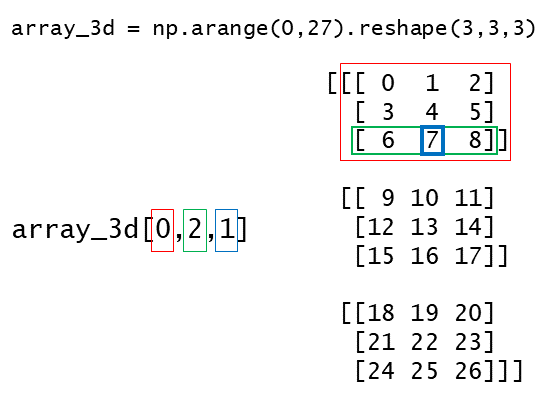

import numpy as np
a1 = np.array([1,2,3,4,5,6])
print(a1)
print(type(a1))[1 2 3 4 5 6]
<class 'numpy.ndarray'>A Python library for scientific computing. It features multidimensional array objects along with an assortment of functions optimized for fast computation. To use this library we first need to import it as shown below. As a convention, the numpy library is imported with an alias np. This will give us access to all the functions within the NumPy library. Let’s create a numpy array.
import numpy as np
a1 = np.array([1,2,3,4,5,6])
print(a1)
print(type(a1))[1 2 3 4 5 6]
<class 'numpy.ndarray'>Although the array looks like a list but it has very different properties and functions associated with it as compared to the python list. An important difference between a list and an ndarray is that the former can have elements of muliple data types while the later can only contain elements of same data type. There are multiple built-in function to create and manipulate arrays for numerical analysis. Let’s have a better understanding of the differences between lists and ndarrays by looking at some the functions associated with arrays. For instance, there are no in-built functions to change the shape of a list or to transpose a list whereas these operations can be done seemlessly with ndarrays. The shape function returns the dimensions of an ndarray as a tuple and the reshape function changes the shape of an ndarray given a tuple.
print("The shape of a1 array is", a1.shape)
m1 = a1.reshape(2,3)
print(m1)
print("The shape of m1 array is", m1.shape)The shape of a1 array is (6,)
[[1 2 3]
[4 5 6]]
The shape of m1 array is (2, 3)At times, there is a need to change the orientation of the data i.e. the rows in a matrix should be arranged as columns. This can be achieve using the transpose functions. The .T attribute of a numpy array does the same operation. In addition, to get all the values of a multidimensional as a 1D array, use the ravel function. This flattening of multidimensional array is useful when we want to iterate over all the elements in an array without considering the dimensions. The output of ravel function is equivalent to the output of reshape(-1).
print(m1)
m1_transposed = m1.T
print(m1_transposed)[[1 2 3]
[4 5 6]]
[[1 4]
[2 5]
[3 6]]print(m1)
m1_flattened = m1.ravel()
print(m1_flattened)[[1 2 3]
[4 5 6]]
[1 2 3 4 5 6]There are various functions available in NumPy to create arrays e.g. zeros, ones, empty, random.rand can be used to create an ndarray having all the values as zero, one, no value, or random values, respectively. These three functions take shape of the array as an argument and data type can be optionally specified. arange is another function that can be used to initialize an array with specific values. This function is similar to the range function with a difference that it return an array while the range function returns a list.
[[0. 0. 0.]
[0. 0. 0.]
[0. 0. 0.]]
[[0.17241597 0.28930394 0.79425668]
[0.18228287 0.33953533 0.03627949]
[0.75375968 0.18508584 0.30824166]]array1 = np.arange(0,10)
print(array1)
array2 = np.arange(0,10,2)
print(array2)[0 1 2 3 4 5 6 7 8 9]
[0 2 4 6 8]When using the arange function, we need to specify the spacing (step) between the numbers that we want to generate within a range of numbers. Let’s say, we need to generate a specific number of equally-spaced points within a range of two numbers. Now arange function is not suitable since there is no option to specify total number of points. In this case, linspace function can be used which takes three numbers as argument, the first two numbers specify the range (both number included) and the third number specifies the number of values to return. The linspace function automatically figures out the ‘step’ or spacing between the numbers.
array3 = np.linspace(0,3,5)
print(array3)
array4 = np.linspace(1,10,4)
print(array4)[0. 0.75 1.5 2.25 3. ]
[ 1. 4. 7. 10.]Numpy has genfromtxt function that comes handy for reading data from text files. The example below show read a csv file using this function. The file test1.csv has five rows with each row having three values separated by comma.
# %load test1.csv
1, 1, 1
2, 4, 8
3, 9, 27
4, 16, 64
5, 25, 125inp_data = np.genfromtxt("test1.csv", delimiter=",")
print(inp_data)
print(inp_data.shape)[[ 1. 1. 1.]
[ 2. 4. 8.]
[ 3. 9. 27.]
[ 4. 16. 64.]
[ 5. 25. 125.]]
(5, 3)# slice of the matrix
sub_matrix = inp_data[1:4]
print(sub_matrix)[[ 2. 4. 8.]
[ 3. 9. 27.]
[ 4. 16. 64.]]Numpy has savetxt function that can be used to save numpy arrays to a text file in e.g. csv format. There is an option to change the delimiter. The example below shows writing a csv file using this function with space as a delimiter. The fmt argument is used to specify the format in which to write the data.
np.savetxt("test2.csv",sub_matrix, delimiter=" ", fmt='%d')# %load test2.csv
2 4 8
3 9 27
4 16 64Just like we can splice a string or list, slicing of numpy arrays can also be performed. While in case of a sting or a list the slice operator takes the start and end positions, in the case of ndarrays, the slice operator would take as many start and end combinations as the dimensions of the ndarray. Which means that slicing can be performed for each dimension of a multidimensional ndarray. In the example below, we first create a three dimensional array having values from 0 to 27. Note that the zeroth element of this 3D array is a 2D array (with values 0 to 8). Similarly, the first element of this 3D array is another 2D array (with values 9 to 17). Next, using slicing, we’ll print one of the number of from this 3D array.
array_3d = np.arange(0,27).reshape(3,3,3)
print(array_3d)[[[ 0 1 2]
[ 3 4 5]
[ 6 7 8]]
[[ 9 10 11]
[12 13 14]
[15 16 17]]
[[18 19 20]
[21 22 23]
[24 25 26]]]print(array_3d.shape)
print(array_3d[0,2,1])(3, 3, 3)
7
print(array_3d[:,:,0])[[ 0 3 6]
[ 9 12 15]
[18 21 24]] Quiz: What would be the slice operator for array_3d to get the following output
[[[10 11]
[13 14]]
[[19 20]
[22 23]]]
print(array_3d[1:3,:2,1:3])The Numpy arrays can be combined using concatenate function. All the arrays that are to be combined must have same number of dimensions. The arrays to be joined as passed as a tuple and an axis can be specified to indicate the direction along which to join the arrays. The arrays can be joined along row-wise or column-wise by specifing axis as 0 or 1, respectively. Note that the dimensions for all the arrays along the concatenation axis must be identical. That is to say that, e.g., when combining two or more arrays along rows - the number of rows in all the arrays should be same.
print(np.arange(1,5))[1 2 3 4]arr1 = np.arange(1,5).reshape(2,2)
arr2 = np.array([[5,6]]) #note the square brackets
print(arr1.shape)
print(arr2.shape)(2, 2)
(1, 2)arr3 = np.concatenate((arr1,arr2), axis=0)
print(arr3)[[1 2]
[3 4]
[5 6]]The above code won’t work with axis=1 because the number of rows in the two arrays is not same. We can transpose the arr2 and then concatenate it with arr1 along axis=1.
arr4 = np.concatenate((arr1, arr2.T), axis=1) #note the .T
print(arr4)[[1 2 5]
[3 4 6]]Similar, output can be generated using the vstack and hstack functions as shown below.
print(np.vstack((arr1,arr2)))
print(np.hstack((arr1,arr2.T)))[[1 2]
[3 4]
[5 6]]
[[1 2 5]
[3 4 6]]When performing arithmetic operations with arrays of different sizes, numpy has a an efficient way of broadcasting the array with lower dimensions to match the dimensions of larger array. Broadcasting can be thought of as creating replicas of the original array. This vectorized array operation is a lot faster than conventional looping in Python.
arr1 = np.arange(1,5).reshape(2,2)
arr2 = np.array([[5,6]]) #note the square brackets
print(arr1)
print(arr2)[[1 2]
[3 4]]
[[5 6]]When we multiply the two arrays (arr1 * arr2) the arr2 would be broadcasted such as its shape would change from (1,2) to (2,2). Now, with this broadcasted array the multiplication would be performed element-wise. Similarly, when with multiple a scaler with a ndarray, the scaler is broadcasted to match the dimensions of the ndarray followed by element-wise multiplication.
print(arr1*arr2) #arr2 would be broadcasted along rows[[ 5 12]
[15 24]]print(arr1*arr2.T) #arr2 would be broadcasted along columns[[ 5 10]
[18 24]]print(arr1*2)[[2 4]
[6 8]]Quiz: Write a program to calculate cube of first 10 natural numbers.
print(np.arange(1,11)**3)This ability to broadcast open up lot of possibilities when working with martices. A simple example is shown be to print table for first ten natural numbers.
num1 = np.arange(1,11).reshape(1,10)
all_ones = np.ones((10,10), dtype=int)
table_10 = all_ones*num1*num1.T
print(table_10)[[ 1 2 3 4 5 6 7 8 9 10]
[ 2 4 6 8 10 12 14 16 18 20]
[ 3 6 9 12 15 18 21 24 27 30]
[ 4 8 12 16 20 24 28 32 36 40]
[ 5 10 15 20 25 30 35 40 45 50]
[ 6 12 18 24 30 36 42 48 54 60]
[ 7 14 21 28 35 42 49 56 63 70]
[ 8 16 24 32 40 48 56 64 72 80]
[ 9 18 27 36 45 54 63 72 81 90]
[ 10 20 30 40 50 60 70 80 90 100]]num1array([[ 1, 2, 3, 4, 5, 6, 7, 8, 9, 10]])#Print tables as seen in math books
table_arr = np.empty((5,1), dtype="<U200")
num2 = np.arange(1,6)
for x in num2:
for y in num2:
s = f"{x:>2} X {y:>2} = {x*y:<4}"
table_arr[y-1][0] = table_arr[y-1][0]+s
# iterate over the array to print each row as a string
# the slice operator is used to remove square brackets and quotes
for i in range(len(table_arr)):
print(np.array2string(table_arr[i])[3:-2])1 X 1 = 1 2 X 1 = 2 3 X 1 = 3 4 X 1 = 4 5 X 1 = 5
1 X 2 = 2 2 X 2 = 4 3 X 2 = 6 4 X 2 = 8 5 X 2 = 10
1 X 3 = 3 2 X 3 = 6 3 X 3 = 9 4 X 3 = 12 5 X 3 = 15
1 X 4 = 4 2 X 4 = 8 3 X 4 = 12 4 X 4 = 16 5 X 4 = 20
1 X 5 = 5 2 X 5 = 10 3 X 5 = 15 4 X 5 = 20 5 X 5 = 25 Numpy comes with a lot of useful functions that facilitates working with ndarrays. Readers are encourages to refer to the NumPy documentation for details.
where()
The where function is used to get the indcies of values based on certain condition(s). The get the values corresponding to those indcies, we can slice the original array with the output indcies.
arr1 = np.linspace(0,100,10, dtype='int')
print("arr1 indcies where the value is greater than 50:")
print(np.where(arr1 > 50))
print("arr1 elements where the value is greater than 50:")
print(arr1[np.where(arr1 > 50)])arr1 indcies where the value is greater than 50:
(array([5, 6, 7, 8, 9], dtype=int64),)
arr1 elements where the value is greater than 50:
[ 55 66 77 88 100]sort()
The values in a numpy array can be sorted along different axes using the sort function. Also, all the values can be sorted after flattening the array by passing the None to the axis argument. This function returns the sorted array and the original array remains unchanged.
arr2 = np.vstack((arr1,np.linspace(100,1,10, dtype='int')))
print(arr2)[[ 0 11 22 33 44 55 66 77 88 100]
[100 89 78 67 56 45 34 23 12 1]]print("Sorting row-wise")
print(np.sort(arr2, axis=1))
print("Sorting column-wise")
print(np.sort(arr2, axis=0))Sorting row-wise
[[ 0 11 22 33 44 55 66 77 88 100]
[ 1 12 23 34 45 56 67 78 89 100]]
Sorting column-wise
[[ 0 11 22 33 44 45 34 23 12 1]
[100 89 78 67 56 55 66 77 88 100]]print("Sorting the flattened array")
print(np.sort(arr2,axis=None))Sorting the flattened array
[ 0 1 11 12 22 23 33 34 44 45 55 56 66 67 77 78 88 89
100 100]Statistics
Below are examples of some of the functions available in numpy for order and descriptive statistics. The axis argument can be used to calculate statistics along a specific dimension - zero means along the columns and one is for row-wise calculations.
# calculate range (max - min)
# Here ptp means 'peak-to-peak'
print(arr2)
print("Column-wise range")
print(np.ptp(arr2,axis=0))[[ 0 11 22 33 44 55 66 77 88 100]
[100 89 78 67 56 45 34 23 12 1]]
Column-wise range
[100 78 56 34 12 10 32 54 76 99]The percentile function return the q-th percentile for given data. This function take two positional arguments - data and q. The second argument (q-th percentile) can be an number or a list of numbers.
#calculate 50-th percentile
print("50th percentile along the columns")
print(np.percentile(arr2,50, axis=0))
print("25th, 50th, and 75th percentile along the rows")
print(np.percentile(arr2,[25,50,75], axis=1))50th percentile along the columns
[50. 50. 50. 50. 50. 50. 50. 50. 50. 50.5]
25th, 50th, and 75th percentile along the rows
[[24.75 25.75]
[49.5 50.5 ]
[74.25 75.25]]#calculate mean, standard deviation, and variance
print(np.mean(arr2, axis=0))
print(np.std(arr2, axis=0))
print(np.var(arr2, axis=0))[50. 50. 50. 50. 50. 50. 50. 50. 50. 50.5]
[50. 39. 28. 17. 6. 5. 16. 27. 38. 49.5]
[2500. 1521. 784. 289. 36. 25. 256. 729. 1444.
2450.25]